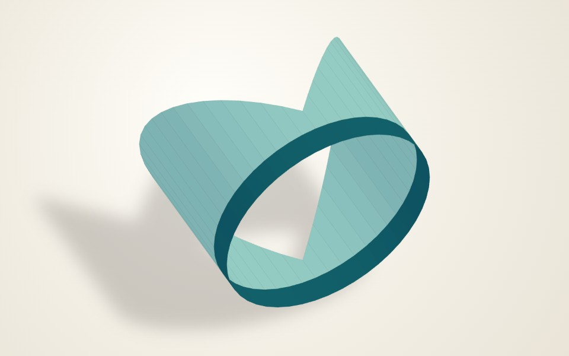
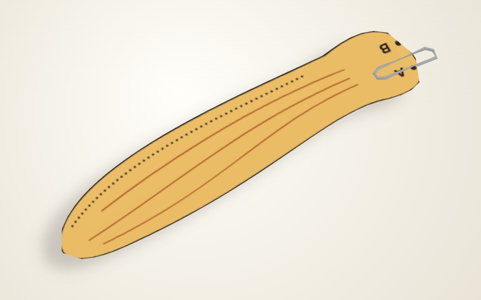

Планировать
Планер-тандем Уильямса
Обе пары крыльев создают подъёмную силу. Приподнятые кончики могут помочь планеру выровняться после небольшого крена.
- Передний размах до сгиба
- 80 mm
- Задний размах до сгиба
- 72 mm

Иллюстрация движения
Что понадобится
Один распечатанный лист обычной бумаги, ножницы и линейка. Попроси взрослого помочь с вырезанием.
Напечатай шаблон
Печатай в масштабе 100% («Фактический размер») и проверь линейкой отметку 50 мм.
Проверь в полёте
В помещении пять раз легко запусти планер горизонтально с одной линии и высоты. Затем чуть подними кончики крыльев и повтори пять запусков.
Archibald Williams · Things To Make · Paper Gliders, Fig. 128 (Model B)
Собери модель
- Распечатай в масштабе 100 % и вырежи по сплошному контуру.
- Положи заготовку рисунком вверх. Найди слева четыре ряда точек. Начиная от края, загибай нос внутрь по каждому ряду.
- Сложи заготовку по центральной штриховой линии рисунком внутрь. Поверни сгибом вниз. Разогни все четыре крыла по штрихпунктирным линиям до горизонтали.
- Держи за центральный сгиб, носом от себя. Проверь, что левое и правое крыло каждой пары на одной высоте.
Если планер поворачивает, проверь симметрию крыльев. Если он раз за разом задирает нос и падает или резко ныряет, проверь сгибы носа и углы крыльев, а затем меняй только один параметр.
Посмотреть другие модели
-

Кольцеплан
Планирование
-

Кленовая крылатка
Вращение